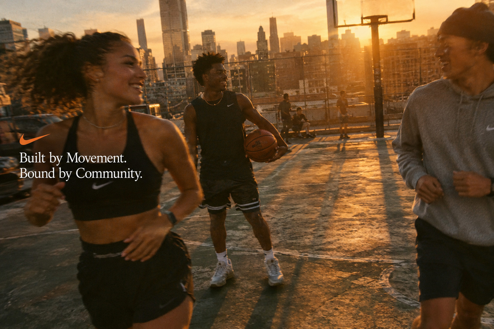
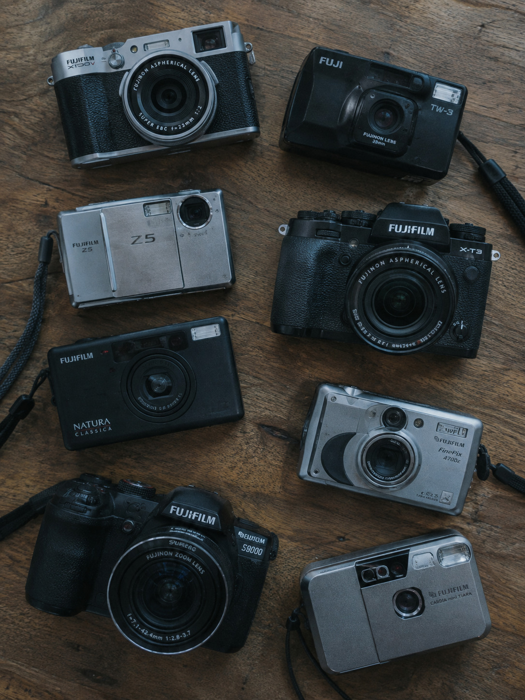
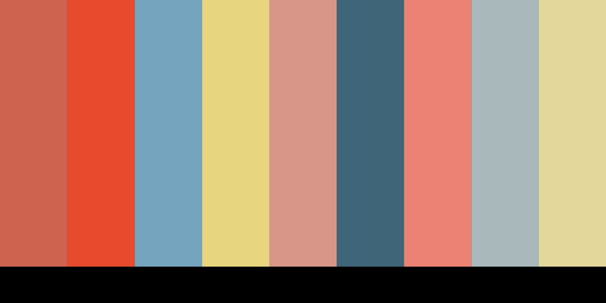
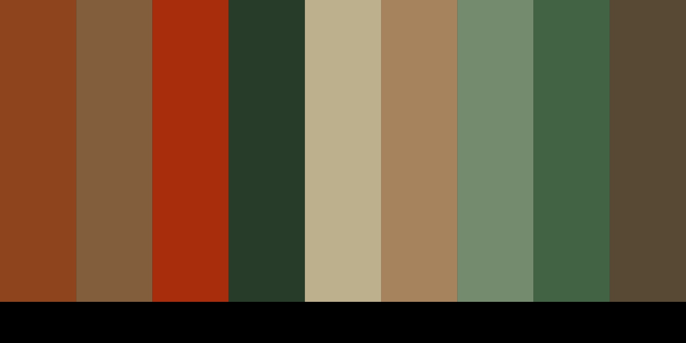

UNIVERSAL ATHLETE
If you have a body, you are an athlete. Athleticism is not reserved for the rich, famous, professional, or elite.
NIKE / GRASSROOTS CAMPAIGN PROPOSAL
“If you have a body, you are an athlete.” (NIKE, Inc., 2026)

CAMPAIGN CONCEPT / PEOPLE FIRST
This campaign steps away from Nike's history of elite celebrity representation and highly polished advertising to center the people who already make movement part of everyday life.
The theme of this campaign is people.
If you have a body, you are an athlete. Athleticism is not reserved for the rich, famous, professional, or elite.
Grassroots community, individuality, togetherness, and shared optimism replace isolation and hyper-competitive performance.
Different bodies and different levels of mobility reinforce a simple idea: everybody and every body can belong in sport.
Digital cameras, Polaroids, mobile phones, raw footage, and ordinary customers create natural, lived-in documentation of movement.
THE PITCH
“If you have a body, you are an athlete”, a powerful statement from Nike’s most recent letter to its investors. This statement steps away from their long history of being represented by athletes and celebrities. (NIKE, Inc., 2026)
Over the last decade, Nike has been defined by highly curated commercials, impeccable cinematography, and polished advertisements. My idea for a new campaign comes from the idea of community; the new generation of customers values individuality, togetherness, and optimism.
Other brands such as On, New Balance, and Adidas have captured the aesthetic preferences of our desired market — Gen Z college students aged 18–26 — as well as the need for authenticity and progressive action desired by our target market. This campaign rebuilds trust and consumer intimacy. (Marketing Dive, 2026; Ruben, 2024)
Showcasing different types of bodies and levels of mobility reinforces the idea that athleticism isn't reserved for the rich and famous. It also communicates a progressive and “cool” take on Nike's marketing.
Through Nike's website and Instagram, the campaign is composed of “amateur” videos and pictures taken by ordinary customers using digital cameras, Polaroids, and similar physical-media formats. The result is candid, natural fun through community and sports.
Natural lighting, raw footage, subtle brand imaging, and an everyday visual language keep the focus on the people participating in movement.
THE THEME OF THIS CAMPAIGN IS PEOPLE.
COMPANY OVERVIEW / NIKE, INC.
Nike was founded in 1964 under a different name and rose to popularity in the late 1980s through its “Just Do It” campaign, which remains one of the company's defining statements. (Sandu, 2026)
Originally focused on innovative footwear for runners and sprinters, Nike grew into a dominant athletic footwear brand while continuing to connect sport, fashion, and technological innovation.
Footwear / Apparel / Equipment
Footwear accounts for around two-thirds of total revenue generated through sales. (NIKE, Inc., 2026)
Nike's broad consumer base prioritizes style, innovation, and new technology.
Nike's current direction emphasizes sport-specific organization and a renewed focus on athletes, including stronger attention to women's sport. (Hill, 2026)
RESEARCH → VISUAL DIRECTION
Nike's successful community-centered work demonstrates the power of involving people in a common goal. This campaign makes participation part of the creative system rather than treating the audience as spectators. (The One Club for Creativity, 2026)
New Balance has built momentum through retro aesthetics and connections with younger audiences. The campaign answers that shift through Nike's own physical-media, community-first visual language. (New Balance, 2025; Ruben, 2024)
Current consumers are skeptical of staged diversity and overly polished advertising. Raw, unfiltered imagery can signal transparency and make the campaign feel lived-in rather than manufactured. (OpenAI, 2026)
Video and candid movement provide a more holistic view of athleticism. The campaign uses movement, recovery, friendship, and everyday activity to expand what an athlete can look like. (NIKE, Inc., 2025)

The visual direction moves away from highly saturated, dark, high-contrast studio setups and toward handheld, documentary-style formats. (OpenAI, 2026)
Amateur image-making becomes part of the campaign language: digital cameras, Polaroids, mobile phones, flash reflections, film grain, and the visual imperfections of real participation. (OpenAI, 2026)
BRAND GUIDELINES / HISTORY OF HUMAN CONNECTION
The original Nike Swoosh was created in haste by graphic design student Carolyn Davidson. (NIKE, Inc., 2022)
Davidson was a student at Portland State University taking a class under Nike co-founder Phil Knight. (NIKE, Inc., 2022)
After being briefed on the project, she spent just under 18 hours sketching the “stripe” onto tissue paper. (NIKE, Inc., 2022)
Although the design was initially received poorly by Knight, the Swoosh became one of Nike's most recognizable brand marks. (NIKE, Inc., 2022)
Her story reflects the spirit of “Just Do It” and connects naturally to a campaign about participation, creativity, and ordinary people shaping the brand.
BRAND SYSTEM / GUARDRAILS
Custom Futura Bold, all caps and tightly kerned, or Times New Roman where an editorial serif accent is appropriate.
Clean humanist sans-serif typography such as Inter or Helvetica Neue.
Black, White, and Nike Orange anchor the brand identity while the campaign extends the palette through Court Green, Slate Grey, and physical-media inspired tones.
Preserve the Swoosh's original proportions. Never warp, stretch, outline, drop-shadow, or apply gradients to the mark.
Maintain clear space equivalent to the Swoosh's height on all sides and use vector scaling when resizing.
THE Y2K SYSTEM HAPPENS AROUND THE MARK — NOT TO THE MARK.
BRAND GUIDELINES / COLOR PALETTE IDEAS
Using a color picker and images from Fuji Weekly, color palettes were generated to match the ideas for customer-submitted images and videos. The direction adopts the retro, physical-media aesthetic visible across contemporary social platforms while giving Nike a visual response to retroism already used by competitors. (ImageColorPicker, 2026; Roesch, 2023)


CITATION DIRECTORY / HOME PAGE
Hill, E. (2026). NIKE, Inc. 2026 shareholder letter. NIKE, Inc. OPEN SOURCE ↗
NIKE, Inc. (2026). 2026 letter to shareholders [Shareholder letter by Elliott Hill]. OPEN SOURCE ↗
NIKE, Inc. (2022, May 16). Never done leaving a mark: Swoosh. Nike.com. OPEN SOURCE ↗
NIKE, Inc. (2025, October 23). Nike debuts its first neuroscience-based footwear to help athletes feel calm, focused and present. NIKE, Inc. Newsroom. OPEN SOURCE ↗
Marketing Dive. (2026, September 3). Where Nike’s marketing comeback is stumbling—and where it can still win. OPEN SOURCE ↗
Ruben, H. (2024, October 10). Nike remains the top brand among teens, but it’s losing share. Retail Dive. OPEN SOURCE ↗
New Balance. (2025). Grey Days 2025 [Campaign photograph].
The One Club for Creativity. (2026). LA Loves A Sequel. The One Show. OPEN SOURCE ↗
Sandu, B. (2026, September 6). The Nike logo history, colors, font, and meaning. Design Your Way. OPEN SOURCE ↗
ImageColorPicker. (2026). Image color picker: Palettes dashboard [Color palette tool]. OPEN SOURCE ↗
Roesch, R. (2023, July 19). Getting that ’90s film look with Fujifilm cameras [Photographs]. Fuji X Weekly. OPEN SOURCE ↗
OpenAI. (2026). “Built by Movement. Bound by Community.” campaign moodboard [AI-generated image]. ChatGPT. OPEN SOURCE ↗
OpenAI. (2026). FujiFilm cameras for “Built by Movement. Bound by Community.” [AI-generated image]. ChatGPT. OPEN SOURCE ↗
OpenAI. (2026). Nike campaign visual aesthetic evolution (2016–2025) [AI-generated response]. ChatGPT. OPEN SOURCE ↗
APPROACHABLE / RAW / UNPOSED / UNSCRIPTED / OPTIMISTIC
Movement makes the athlete.
Community makes the movement matter.